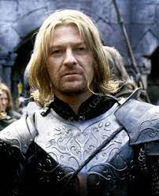

|  |
BoromirCaptain of The White Tower and Son of Gondor Boromir is the most underrated character of all time in the LOTR series. He is the hero which most audiences felt negative about him. |
| Dates | Works |
|---|---|
| 2010-2013 | Achievements For BORO |
| 2010 | Defended Osgiliath with Small Amount of Reinforcements |
| Long-Sword | ⚔⚔⚔⚔⚔ |
| Shield | ⚔ |
| Bow | ⚔⚔⚔ |